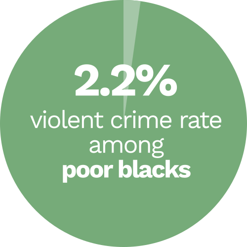
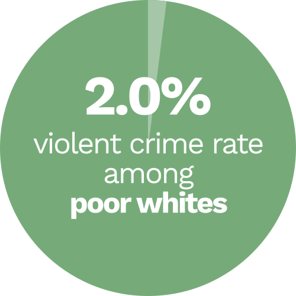

We’ve all heard the argument that if black people actually care about black lives, they should they stop killing each other. The subliminal message is clear — “Even black people kill each other. If those blacks would act civilized, maybe the police wouldn’t have to use force. Surely they must be doing something wrong.”
There we have it. We’ve demonized the victim. We’ve taken the focus away from the issue of police brutality and shifted it to the innate savagery of African Americans. The argument is typically accompanied by some statistic showing how blacks commit crimes at a rate disproportional to their numbers.
Except this argument is incorrect.
What about white-on-white crime?
We constantly hear about “black-on-black crime,” but I haven’t heard a single reference toward the epidemic of white-on-white crime. In fact, 84 percent of white murder victims are murdered by other white people.
Why isn’t this tragedy being covered? Well, simply put, white-on-white crime is just “crime.” There’s no need to give it a color label because it has nothing to do with racial prejudice. Whites aren’t murdering other whites because they hate white people.
All crime deserves condemnation, including both “white-on-white” and “black-on-black” crime, but there’s a reason the media only mentions black on black crime. And it’s not because blacks are killing each other out of self-hatred or racial prejudice.
It’s an attempt to demonize black people, painting the picture that they’re inherently thugs making use of excessive force necessary to deal with these hooligans.
When blacks are around other black people, which is often the case, then naturally most of their crimes would be toward people they’re around the most—other black people.
But black people commit more crimes than white people!
Yes, you are absolutely right. Blacks commit a larger proportion of crimes than their numbers suggest. However, let’s examine the causes of why this happens. There’s clearly a larger societal phenomenon at play. To deny this isn’t just ridiculous; it’s borderline racist.
If there’s no explanation on why blacks commit more crimes than whites, then the logical assumption would be to assume that black people are inferior and more prone to crime.
Fox News anchor Bill O’Reilly implies this when he stops just shy of criticizing black people, instead attacking “black culture.” What O’Reilly doesn’t realize is that white kids listen to the same music, do the same dances, and enjoy numerous contributions that blacks have made to popular culture as well. So black culture isn’t the problem. Whites share many of the same aspects of black culture that O’Reilly thinks are causing higher crime rates.
So what’s your explanation?
Black people commit more crimes because they’re poorer. A study in Columbus, Ohio, showed that crime rates in low-income black neighborhoods were virtually the same as crime rates in low-income white areas. Poverty creates hotbeds for crime. Those who have less of a chance to succeed are more susceptible to falling into a life of crime.
 Data from Ohio State University.
Why can’t they get a job instead of be criminals?
Poverty’s a vicious cycle. Parents who lack a college degree make less income and aren’t able to spend as much time looking after their children. They’re forced to work more hours at multiple jobs, lacking both the time and knowledge to help their children with homework and look out for their general well-being.
They aren’t poor because they’re stupid, lazy, or morally inferior. They were born into poverty and a darker skin tone, both of which would condemn them to a lifetime of hate, prejudice, and a higher likelihood for children to get charged as adults.
Slavery was abolished 150 years ago, and segregation ended 50 years ago. But the roots of prejudice still run deep, and the effects are still felt today. Together they restricted African Americans from fully participating in the economy of a growing nation, ensuring poverty for decades to come. In a country where it “costs money to make money,” as well as to receive a college education, to put food on the table, and to provide a comfortable life for your family, it’s no wonder the talons of poverty have sunken in for decades.
So you're saying it's all white people's fault even though slavery ended decades ago?
Poverty breeds crime. The reasons for the poverty of African Americans include years of racial segregation, white America’s almost 100-year head start, and prejudice that still ensues to this day, keeping African Americans decades behind.
Black-on-black crime doesn’t exist; it’s just crime. Instead of blaming the victim, let’s come together to work on the solution. You can’t claim #AllLivesMatter if you refuse to consider the perspective of black ones.
The views in these articles are those of the writers and not necessarily of TldrHub Media.